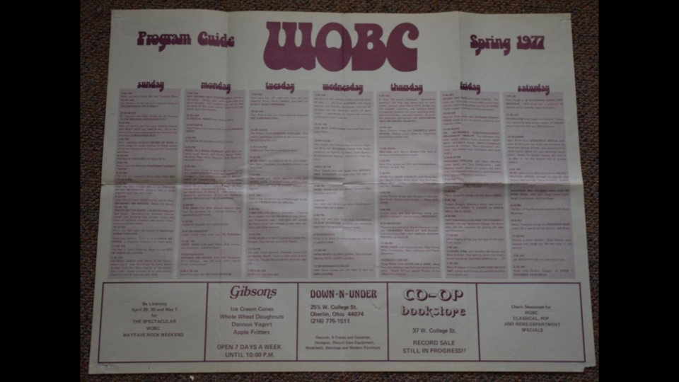

The documents I have gone through for this project help me understand the feminist sphere at Oberlin throughout the 1970s and 1980s. Looking through the program guides has been helpful in understanding what Oberlin students were choosing to talk about through media. Some radio shows from WOBC that stood out to me were Oberlin Gay Radio, Musings, NIA (Black Affairs), The Feminist Half Hour, and Black Renaissance. All of these have relations to feminism, or inspired practices of feminism in the 70s and 80s. I also learned interesting facts about WOBC through their program guides. An example is that from 1973-1974 there were only three women on the executive board of WOBC out of a total of 50. These documents help provide the context aspect of my sphere model, intersecting with time to create history.
This work is not only relevant to Oberlin even though Oberlin’s feminism is being centered through this practice. When we look at the context of this research broadly, we can see that Oberlin could reflect other small liberal arts colleges during the 1970s and 1980s. Additionally, people come to college from many different places and contexts, meaning that the feminism at Oberlin reflects some perspectives nationally and internationally. At the same time, it is important to note that Oberlin’s feminism does not reflect all feminism–especially if we are thinking transnationally. Through this research, we can find out more about the other dimensions of a feminist sphere—the current wave and the wave that inspired the current wave.
April 1976
This document is from April 1976 and serves as the cover of the program guide for this time. Circled in the upper right corner of this document are the categories listed as “classical popular news special programming,” which implies that those were the only named categories for WOBC at this time.
April 1976
In this section of the April 1976 program guide specific radio shows are listed on a weekly schedule. This portion of the program guide includes the Monday and Tuesday shows. Some of these shows that stood out to me were Paint it Black and Furaha, both by Latifu Onaje. Paint it Black is a Black news show, and Furaha means “joy” in Swahili.
Spring 1977

A program guide, completely unfolded, from the Spring of 1977. Advertisements include the Mayfair Rock Weekend by WOBC, Gibsons, Down-N-Under, the Co-op Bookstore, and Newscope.
Spring 1978
This document is from the program guide for the Spring of 1978. With the channel number imposed over the text, this program guide is very aesthetically pleasing to the reader. Two shows that stand out are the Herstory and Just Being Myself radio shows. The Herstory show, by Connie Cave and Melissa Carter, focuses on feminist perspectives. Just Being Myself is “Oberlin’s gay radio show” that includes “anything concerned with sexuality and the Oberlin community.”
Spring 1979
This section of the program guide from the Spring of 1979 includes the Herstory radio show as well as the Black Gold radio show by Tony Thomas. It is important to note that the Herstory Show has a shorter time slot than most other shows in this program guide, and shares a slot with the Literary radio show.
Fall 1980
This program guide is from the fall of 1980. This section of the program guide includes the radio shows Oberlin Radio Workshop and Didjeridu. The Oberlin Radio Workshop was a radio theater space where many feminist ideals were practiced through performance. Didjeridu, the word for a particular wind instrument, was a radio show that centered music from Africa, South America, and Asia.
Spring 1980
This is from the program guide from the spring of 1980, and includes the staff list as well as the names of the WOBC executive board.
Spring 1981
This is a section of a program guide from the Spring of 1981. This program guide takes booklet form, and includes a written section on the back of the front cover titled “To Our Listeners.” Some parts of this section that stand out are when the Executive Board writes about how they have a “smaller..more efficient staff” and “our programming is as diverse as ever.” It is interesting to consider whether or not these two factors have any correlation with each other. Additionally, what was the decision making for having a smaller staff during this time?
Spring 1981
This document is a program guide from the spring of 1981, unfolded, with a WOBC logo layered on top of the program guide.
Spring 1986
This program guide section is from the spring of 1986, including a radio show called Spinster Sisters. This show, by Hannah Higgins and Aishe Berger, includes “Women’s music, culture, and thought: an outlet for local women.” The “local women” aspect of this quote is the most interesting, because it implies that this radio show was not just for students of Oberlin College.
Fall 1989
This document is from the fall of 1989. At this point, longer writing elements were utilized by WOBC to advertise radio shows, share news, or share perspectives that represented WOBC’s mission as a radio organization. In this program guide, the WOBC NEWS column as well as a column about the show Impacto Latino are visible.
The translation for the spanish in this column is written below (special thanks to Riley Davis for translating):
What's happening in the Spanish speaking world? What are the issues that deserve the attention of the Spanish speaking world in North America? Why is the community special and unique? What does the community offer the world in its culture, ideas, and art? Listen to "Latino Impact" to learn about what's happening. There will be news of Spanish speaking countries, information about activities related to Latino culture in Lorain county, and commentary about problems and successes in the community. There will also be interviews with local personalities and national figures of the Spanish speaking world, as well as music and poetry! And of course, it will all be in Spanish! The Spanish speaking world is extremely beautiful and it deserves a good radio program in Lorain county. Get in touch with us!
Fall 1989
This document is also from the Fall of 1989, as a part of the written section for the program guide. This section of the program guide states the mission of WOBC, as well as general information about the station as a whole. The “educational, non-commercial, independent programming” that WOBC states they provide suggests that WOBC is not representative of any special interests by the powers that be. Additionally, their choice to write “take an active role in listening and responding to what they hear” suggests that WOBC tries to engage with the entire Oberlin community and takes their needs seriously.